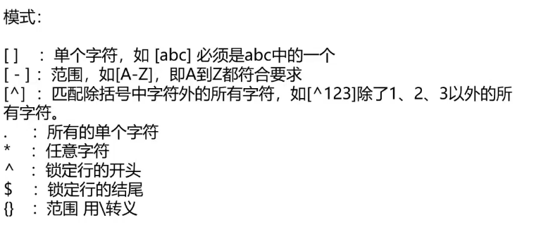

# 基础
# Linux 是谁开发的、是用什么语言开发的、Unix 的开源精神
1991 年 Linus Torvalds（林纳斯。托瓦兹）写出 Linux 内核的第一个版本；
1992 年第一个发行版出现；
GNU/Linux 系统 = Linux 内核 + GNU；发行版有：Red Hat,Debain,Suse,Mandrake,Redflag...
GNU：即革奴计划，由理查德。斯托曼发起，目标是创建一套完全自由的操作系统；
其他：EMACS、Copyleft
# MBR 简介
一块硬盘最多拥有 4 个主分区 (包括扩展分区)。这是
ps: 44 页前
# Linux 下的 shell 相关的操作
shell 是 Linux 系统的一个重要组成部分。在 Linux 系统中，shell 就是一组介于用户与 Linux 内核之间的系统程序。shell 是用户与 Linux 内核之间的接口。
# shell 的分类
hell 有着不同的分类，比如 Bourne shell（sh），Korn shell（ksh）、C shell （csh）、Bourne-again shell（bash）、tcsh。其中最常用的有 csh 和 bash，其提示符如下：
sh–Bash ：#root $user
csh–:#root %user
# 简单的 shell 命令
Linux 命令又称 shell 命令。
# 语法
命令名 【选项】 【参数】
命令行输入的第一个字必须是一个命令的名字，第二个字是明明令的选项或参数，命令行中的每个字必须有空格隔开。【选项】的方括号表示语法上选项是可有可无的。选项旺旺包括一个或多个英文字母，在字母前面必须有一个减号【减号是必须的，Linux 用它来区分选项和参数，参数是不带减号的】
# pwd
格式：pwd（print work directory 缩写）
功能：显示当前目录的绝对路径。
# cd
格式：cd 【目录】
功能：切换到指定目录。
‘change directory’的缩写
cd ../ 返回到上一级目录
cd 不带任何参数表示返回到家目录
cd - 返回上一个目录。
# ls
格式：ls 【选项】 【文件 | 目录】
功能：显示指定目录下的内容。内容包括该目录下的文件和子目录。当不指定目录时，默认显示当前面目录下中的文件和子目录信息。‘list’的缩写。
主要选项：
-a 显示所有文件和子目录，包括隐藏文件和隐藏自子目录。Linux 下的隐藏文件和隐藏子目录以‘.’开头。
-l 显示文件和子目录详细信息，即以长格式显示，包括文件类型、权限、拥有人和拥有组、文件大小、最近一次修改时间、文件名等信息。
-d 参数应该是目录，只显示目录的信息，而不显示其中所包含的文件机子目录的信息，该选项通常与‘-l’一起使用，后接目录名，功能是以长格式显示目录信息。
-R 不仅显示指定目录下的文件和子目录信息，而且还递归地显示各子路录下的文件和子目录信息。
-t 按照时间顺序显示文件，新的文件排在前面。ls 命令默认按照字母顺序排列。
--help 查看帮助信息。
# date
格式：date【+FORMAT】 或 date 【MMDDhhmm【YY】【YYYY】】
功能：查看或修改系统时间。
date 命令显示的内容依次是星期、月份、小时、分钟、秒、时区和年份。
# cal
格式：cal【YYYY】
功能：显示日历
显示本月的日历。若参数为年份，则显示该年的日历。
# who
格式：who
功能：显示当前已登录到系统的所有用户名及其终端名和登录到系统的时间。
# clear
格式：clear
功能：清楚当前终端的屏幕内容。
也可以使用快捷组合键 Ctrl + L
# 获取帮助
# whatis
格式：whatis 命令名
功能： 查询某命令的简单功能。
但该命令信息量较少，且该命令是基于数据库的查询，对于刚安装的命令则查询不到，等到系统更新后才能查到。若要立即查询，则使用 makewhatis 立即生效更新数据库，然后再用该命令进行查询。
# --help
格式： 命令名 --help
功能：显示指定命令的帮助信息。
# man
格式：man 命令名
功能：显示指定命令的手册页帮助信息。
# info
格式：info 命令名
功能：查询命令的用法合作文件的格式。
# /usr/share/doc
帮助文档就位于 /usr/share/doc 目录下。
以上获取帮助的方法，man 命令是最常使用的。
# bash 变量
# 变量的设置与引用
变量名 = 值
引用格式为 “{变量名}”，一般情况下可以不用加大括号，但有些情况下必须要加大括号。
echo $Atest 将 Atest 当作一个变量；
echo ${A} test test 将在变量 A 之后。
# 环境变量
系统中影响到 bash 环境的变量被称为环境变量。可以使用 env 或 export 来查阅系统默认的环境变量。
常用的环境变量
PS1: 系统提示符环境变量。
HISTSIZE: 默认保存的历史记录数。
PATH: 执行文件查找的路径。
PATH 的值都是一些目录，目录与目录之间以冒号（:）分隔，由于文件的查找是依序有 PATH 变量内的目录来查找的，所以目录的顺序也很重要。USER: 当前登录的用户。
HOME: 当前用户的家目录。
EUID: 当前用户的 UID
# 与 shell 有关的配置文件
/etc/profile 文件、这是系统最重要的 shell 配置文件，也是用户登录系统最先检查的文件，系统的环境变量多定义在此文件中，主要包括 PATH、USER、LANG、MAIL、HOSTNAME、HISTSIZE 和 INPUTRC。
~/.bash_profile 文件。每个用户的 bash 环境配置文件，存在于用户目录的家目录下，当系统运行 /etc/profile/ 后，将读取此文件的内容，此文件定义了 USER、EUID、HOME、PATH 等环境变量，此处的 PATH 包括了用户自己定义的路径以及用户的 “bin” 路径
~/.bashrc 文件。 前两个文件仅在系统登录时读取。此文件在每次运行 bash 是读取，此文件主要定义的是一些终端设置以及 Shell 提示符等。而不定义环境变量等内容。
~/.bash_history 文件。该文件保存了用户的历史记录。
# 历史记录命令
可以利用上下方向键调出已经执行过的 Shell 命令。
还可以用 history 命令查看 Shell 命令的历史记录
格式：history【数字】
功能：查看 Shell 命令的历史记录。如果指定参数则查看最近执行过的指定个数的 Shell 命令
还有 '!' 也可以调出一执行过的 Shell 命令。
格式：! 序号
功能：执行指定序号的 Shell 命令，‘!’ 后面也可以跟字符串来调用已执行过的以该字符串开头的 Shell 命令。
~
在 ContOS7 上不知道为什么不能用 '!' 命令，man 命令提示没有 '!' 命令手册
~
原来是感叹号与后面的的序号之间没有空格。
!! 是执行上一条命令
# 通配符
* : 通配 0 个或多个字符
？ ：通配任意单个字符
* ？ [] - ! 可以组成字符组。
例子：
ls *.png 列出所有 PNG 图片
ls a? 列出首字母是 a, 文件名只有两个字符的所有文件
ls [abc]* 列出首字母是 a、b、c 的所有文件
# 别名
格式： alinas 【别名 =‘标准 Shell 命令行’】
功能：查看和设置别名
不加参数时查看别名。
# 去除特殊符号的意义
Linux 系统中有许多符号具有特殊的含义。如！表示去历史记录，$ 表示取变量的值，`` 反引号表示取命令的执行结果，等等。
三种方法可以去除特殊符号的意义
- 反斜杠 \
- 单引号 ('') 使任何特殊字符都不转义，原样输出。
- 双引号 ("") 只有以下四种情况下会转义：
$(美元符号)-- 取变量的值；
``(反引号)-- 命令替换；
\(反斜杠)-- 单个字符禁止（转义）；
!(感叹号)-- 历史命令替换。
# 重定向
Linux 系统中通常利用键盘输入数据，命令执行结果输出到屏幕上。也就是说 Linux 的默认标准输入时键盘，默认标准输出和标准错误输出都是屏幕。
Shell 中，不使用系统默认的输入输出端口，而是重新指定至文件的情况称为重定向。
# 输出重定向
输出重定向就是命令的执行结果不显示在标准输出（屏幕）上，而是保存到某一文件中的操作，利用符号 “>” 来显示。
但命令的错误输出信息还是会显示在屏幕上，正确输出会在文件中。
# 附加输出重定向
与输出重定向相比附加重定向将内容追加到原有内容之后，不会覆盖原内容。利用符号 “>>” 来实现。
# 错误输出重定向
Shell 中的标准输出与错误输出是两个独立的操作。错误输出也可以进行重定向。利用符号 “2>” 来实现。
# 组合输出重定向
若要将正确输出和错误输出重定向至某个文件，而屏幕上不显示任何内容，则可以利用符号 “&>” 来实现组合输出重定向功能。
# 输入重定向
输入重定向是从某个文件读入数据，用 “<” 符号来实现。由于大多数命令都已参数的形式在命令行上指定输入文件，所以并不常用。
| 符号 | 说明 |
|---|---|
| command <file | 将 file 文件中的内容作为 command 的输入。 |
| command <<END | 从标准输入（键盘）中读取数据，直到遇见分界符 END 才停止（分界符可以是任意的字符串，用户自己定义）。 |
| command | 将 file1 作为 command 的输入，并将 command 的处理结果输出到 file2。 |
# 管道
学习管道之前我们先了解一下 linux 的命令执行顺序
# 命令执行顺序控制
通常情况下，我们在终端只能执行一条命令，然后按下回车执行，那么如何执行多条命令呢？
顺序执行多条命令：command1;command2;command3; | |
简单的顺序指令可以通过 ;来实现 | |
有条件的执行多条命令：which command1 && command2 || command3 ## which 命令用于查找文件。 | |
&& : 如果前一条命令执行成功则执行下一条命令，如果command1执行成功（返回0）,则执行command2 | |
|| :与&&命令相反，执行不成功时执行这个命令 | |
$?: 存储上一次命令的返回结果 |
# 管道命令
管道是一种通信机制，通常用于进程间的通信（也可通过 socket 进行网络通信），它表现出来的形式将前面每一个进程的输出（stdout）直接作为下一个进程的输入（stdin）。
管道命令使用 | 作为界定符号，管道命令与上面说的连续执行命令不一样。
管道命令仅能处理 standard output, 对于 standard error output 会予以忽略。
less,more,head,tail...都是可以接受standard input的命令，所以他们是管道命令ls,cp,mv并不会接受standard input的命令，所以他们就不是管道命令了。
管道命令必须要能够接受来自前一个命令的数据成为 standard input 继续处理才行。
第一个管道命令$ ls -al /etc | less
通过管道将 ls -al 的输出作为 下一个命令 less 的输入，方便浏览。
# 文本处理工具
# 提取文本
# 查看文件内容
cat | |
格式：cat 【选项】 文件列表 | |
功能：显示文本文件内容 | |
选项说明：-n 表示在每一行前面显示行号。 | |
more | |
格式：more 文件 | |
功能： 分屏显示文本文件的内容。 | |
只能向后翻阅 | |
less | |
与more命令非常相似，也能分屏显示文本文件的内容。用户可以用上下箭头、Enter键、Space键前后翻阅文本内容。使用Q键退出命令。 | |
less比more命令更方便。 |
# 产看文件摘录
head | |
格式：head 【选项】 文件 | |
功能：显示文本文件的开头部分，默认显示文件的前十行 | |
主要选项说明： '-n 数字' 表示指定显示的行数 | |
tail | |
与head命令非常相似，用于显示文件的结尾部分，默认显示最后10行，也可以用'-n 数字'选项 | |
还可以用'-f'选项表示跟进文件后续增加，通常用于监控日志文件，便于网络服务的排错处理。 |
# 按关键字提取文本
grep | |
按照关键字进行文本的提取及过滤出含有某个关键字的行。 | |
grep命令通常与管道配合使用，通常的选项及含义如下： | |
-i 忽略大小写 | |
-n 行号显示 | |
-v 取反(相对的结果) | |
^ 以……开头 | |
$ 以……结尾 | |
-r 以递归方式搜索目录 | |
-AX 包括每个匹配项的后X行 | |
-BX 包括每个匹配项的前X行 | |
--color 以颜色突出显示匹配项 | |
-w 精确匹配某个单词 |
正则匹配模式

实例
# 按列或字段提取文本
按列或字段提取文本的命令常用的包括 cut 和 awk，通常与管道配合使用。
- cut
格式：cut -d 字符 -f 数字 file
功能：提取文件 file 中以某字符未分割符的某列（或某字段）。其中 - d 后面的字符表示分隔符，-f 后面的数字表示提取的列数。
[root@node ~]# cat /etc/passwd | cut -d : -f 1,3 | |
root:0 | |
bin:1 | |
daemon:2 | |
adm:3 | |
lp:4 | |
sync:5 | |
shutdown:6 | |
halt:7 | |
mail:8 | |
operator:11 | |
games:12 | |
ftp:14 | |
【略】 | |
显示文件/etc/passwd中以‘:’作为分隔符的第一列和第三列 |
cut 命令还可以接 - c 选项，表示义字符个数截取。
[root@node ~]# cat /etc/passwd | cut -c 1-3 | |
roo | |
bin | |
dae | |
adm | |
lp: | |
syn | |
shu | |
【略】 |
表示截取 /etc/passwd 文件中的第 1~3 个字符
- awk
awk 是一种很棒的语言，它适合文本处理和报表生成，其语法较为常见，借鉴了某些语言的一些精华，如 C 语言等。在 Linux 系统日常处理工作中，发挥很重要的作用，掌握了 awk 将会使你的工作变的高大上。awk 是三剑客的老大，利剑出鞘，必会不同凡响。
简单来说，awk 是把文件逐行的读入，以空格为默认分隔符将每行切片，切开的部分再进行各种分析处理。
awk '{pattern + action}' {filename}
其中 pattern 表示 AWK 在数据中查找的内容，而 action 是在找到匹配内容时所执行的一系列命令。
filename 的 {} 实际是不用写的。
awk 语言的最基本功能是在文件或者字符串中基于指定规则浏览和抽取信息，awk 抽取信息后，才能进行其他文本操作。完整的 awk 脚本通常用来格式化文本文件中的信息。
通常，awk 是以文件的一行为处理单位的。awk 每接收文件的一行，然后执行相应的命令，来处理文本。
awk [选项]' 脚本命令文件名
常用选项:
-F 指定输入分隔符，默认分割符是空格，如 - F:
-f file 从脚本文件中读取 awk 脚本指令
以：为分隔符，显示第 1 和 5 列
awk -F : '{printf $1,$5}' /etc/passwd
awk 内置变量:
FILENAME 文件名
FNR 浏览文件的记录数
NF 浏览记录的域的个数 (列数)
NR 已读的记录数 (行数)
$n $0 变量是指整条记录。NF 表示最后一列的信息
案例
# 分析文本
# 统计文本信息
wc | |
格式：wc 【选项】 文件 | |
功能：显示文本文件的行数、字数和字符数 | |
主要选项说明： | |
-c 仅显示问价的字节数 | |
-l 仅显示问价的行数 | |
-w 仅显示文件的单词数 | |
[root@node ~]# wc /etc/passwd | |
44 88 2302 /etc/passwd | |
wc命令依次显示文件的行数、单词数、字节数及文件名。 |
# 排序命令
sort | |
sort [-fbMnrtuk] [file or stdin] | |
[参数] | |
-f ：忽略大小写的差异，例如A 与a 视为编码相同 | |
-b ：忽略最前面的空格部分 | |
-M ：以月份的名字来排序，例如JAN, DEC 等等的排序方法 | |
-n ：使用『纯数字』进行排序默认是以文字型态来排序的) | |
-r ：反向排序 | |
-u ：就是uniq ，相同的资料中，仅出现一行代表 | |
-t ：分隔符号，预设是用[tab] 键来分隔 | |
-k ：以那个区间(field) 来进行排序的意思 |
# 处理文本
# 转换字符
tr | |
Linux tr 命令用于转换或删除文件中的字符。 | |
tr 指令从标准输入设备读取数据，经过字符串转译后，将结果输出到标准输出设备。 | |
语法 | |
tr [-cdst][--help][--version][第一字符集][第二字符集] | |
tr [OPTION]…SET1[SET2] | |
参数说明： | |
-c, --complement：反选设定字符。也就是符合 SET1 的部份不做处理，不符合的剩余部份才进行转换 | |
-d, --delete：删除指令字符 | |
-s, --squeeze-repeats：缩减连续重复的字符成指定的单个字符 | |
-t, --truncate-set1：削减 SET1 指定范围，使之与 SET2 设定长度相等 | |
--help：显示程序用法信息 | |
--version：显示程序本身的版本信息 | |
字符集合的范围： | |
\NNN 八进制值的字符 NNN (1 to 3 为八进制值的字符) | |
\\ 反斜杠 | |
\a Ctrl-G 铃声 | |
\b Ctrl-H 退格符 | |
\f Ctrl-L 走行换页 | |
\n Ctrl-J 新行 | |
\r Ctrl-M 回车 | |
\t Ctrl-I tab键 | |
\v Ctrl-X 水平制表符 | |
CHAR1-CHAR2 ：字符范围从 CHAR1 到 CHAR2 的指定，范围的指定以 ASCII 码的次序为基础，只能由小到大，不能由大到小。 | |
[CHAR*] ：这是 SET2 专用的设定，功能是重复指定的字符到与 SET1 相同长度为止 | |
[CHAR*REPEAT] ：这也是 SET2 专用的设定，功能是重复指定的字符到设定的 REPEAT 次数为止(REPEAT 的数字采 8 进位制计算，以 0 为开始) | |
[:alnum:] ：所有字母字符与数字 | |
[:alpha:] ：所有字母字符 | |
[:blank:] ：所有水平空格 | |
[:cntrl:] ：所有控制字符 | |
[:digit:] ：所有数字 | |
[:graph:] ：所有可打印的字符(不包含空格符) | |
[:lower:] ：所有小写字母 | |
[:print:] ：所有可打印的字符(包含空格符) | |
[:punct:] ：所有标点字符 | |
[:space:] ：所有水平与垂直空格符 | |
[:upper:] ：所有大写字母 | |
[:xdigit:] ：所有 16 进位制的数字 | |
[=CHAR=] ：所有符合指定的字符(等号里的 CHAR，代表你可自订的字符) | |
实例 | |
将文件testfile中的小写字母全部转换成大写字母，此时，可使用如下命令： | |
cat testfile |tr a-z A-Z | |
testfile文件中的内容如下： | |
$ cat testfile #testfile 原来的内容 | |
Linux networks are becoming more and more common, | |
but scurity is often an overlooked | |
issue. Unfortunately, in today’s environment all networks | |
are potential hacker targets, | |
fro0m tp-secret military research networks to small home LANs. | |
Linux Network Securty focuses on securing Linux in a | |
networked environment, where the | |
security of the entire network needs to be considered | |
rather than just isolated machines. | |
It uses a mix of theory and practicl techniques to | |
teach administrators how to install and | |
use security applications, as well as how the | |
applcations work and why they are necesary. | |
使用 tr 命令大小写转换后，得到如下输出结果： | |
$ cat testfile | tr a-z A-Z #转换后的输出 | |
LINUX NETWORKS ARE BECOMING MORE AND MORE COMMON, BUT SCURITY IS OFTEN AN OVERLOOKED | |
ISSUE. UNFORTUNATELY, IN TODAY’S ENVIRONMENT ALL NETWORKS ARE POTENTIAL HACKER TARGETS, | |
FROM TP-SECRET MILITARY RESEARCH NETWORKS TO SMALL HOME LANS. | |
LINUX NETWORK SECURTY FOCUSES ON SECURING LINUX IN A NETWORKED ENVIRONMENT, WHERE THE | |
SECURITY OF THE ENTIRE NETWORK NEEDS TO BE CONSIDERED RATHER THAN JUST ISOLATED MACHINES. | |
IT USES A MIX OF THEORY AND PRACTICL TECHNIQUES TO TEACH ADMINISTRATORS HOW TO INSTALL AND | |
USE SECURITY APPLICATIONS, AS WELL AS HOW THE APPLCATIONS WORK AND WHY THEY ARE NECESARY. | |
大小写转换，也可以通过[:lower][:upper]参数来实现。例如使用如下命令： | |
cat testfile |tr [:lower:] [:upper:] | |
输出结果如下： | |
$ cat testfile | tr [:lower:] [:upper:] #转换后的输出 | |
LINUX NETWORKS ARE BECOMING MORE AND MORE COMMON, BUT SCURITY IS OFTEN AN OVERLOOKED | |
ISSUE. UNFORTUNATELY, IN TODAY’S ENVIRONMENT ALL NETWORKS ARE POTENTIAL HACKER TARGETS, | |
FROM TP-SECRET MILITARY RESEARCH NETWORKS TO SMALL HOME LANS. | |
LINUX NETWORK SECURTY FOCUSES ON SECURING LINUX IN A NETWORKED ENVIRONMENT, WHERE THE | |
SECURITY OF THE ENTIRE NETWORK NEEDS TO BE CONSIDERED RATHER THAN JUST ISOLATED MACHINES. | |
IT USES A MIX OF THEORY AND PRACTICL TECHNIQUES TO TEACH ADMINISTRATORS HOW TO INSTALL AND | |
USE SECURITY APPLICATIONS, AS WELL AS HOW THE APPLCATIONS WORK AND WHY THEY ARE NECESARY. |
# 查找替换
sed | |
stream editor的缩写，用于对文本流进行查找替换操作，不改变源文件。 | |
Linux sed 命令是利用脚本来处理文本文件。 | |
sed 可依照脚本的指令来处理、编辑文本文件。 | |
Sed 主要用来自动编辑一个或多个文件、简化对文件的反复操作、编写转换程序等。 | |
语法 | |
sed [-hnV][-e<script>][-f<script文件>][文本文件] | |
参数说明： | |
-e<script>或--expression=<script> 以选项中指定的script来处理输入的文本文件。 | |
-f<script文件>或--file=<script文件> 以选项中指定的script文件来处理输入的文本文件。 | |
-h或--help 显示帮助。 | |
-n或--quiet或--silent 仅显示script处理后的结果。 | |
-V或--version 显示版本信息。 | |
动作说明： | |
a ：新增， a 的后面可以接字串，而这些字串会在新的一行出现(目前的下一行)～ | |
c ：取代， c 的后面可以接字串，这些字串可以取代 n1,n2 之间的行！ | |
d ：删除，因为是删除啊，所以 d 后面通常不接任何咚咚； | |
i ：插入， i 的后面可以接字串，而这些字串会在新的一行出现(目前的上一行)； | |
p ：打印，亦即将某个选择的数据印出。通常 p 会与参数 sed -n 一起运行～ | |
s ：取代，可以直接进行取代的工作哩！通常这个 s 的动作可以搭配正规表示法！例如 1,20s/old/new/g 就是啦！ | |
实例 | |
在testfile文件的第四行后添加一行，并将结果输出到标准输出，在命令行提示符下输入如下命令： | |
sed -e 4a\newLine testfile | |
首先查看testfile中的内容如下： | |
$ cat testfile #查看 testfile 中的内容 | |
HELLO LINUX! | |
Linux is a free unix-type opterating system. | |
This is a linux testfile! | |
Linux test | |
使用sed命令后，输出结果如下： | |
$ sed -e 4a\newline testfile #使用 sed 在第四行后添加新字符串 | |
HELLO LINUX! #testfile 文件原有的内容 | |
Linux is a free unix-type opterating system. | |
This is a linux testfile! | |
Linux test | |
newline |
# Linux 中的 shell 如何切换
转载自 https://blog.csdn.net/jerry_1126/article/details/85224737
方法一: chsh -s /bin/ksh | |
[root@host ~]# chsh -s /bin/ksh # 修改用户默认的 shell 为 ksh | |
Changing shell for root. | |
Shell not changed. | |
[root@host ~]# egrep 'root' /etc/passwd # 查看修改是否成功，按 CTRL+D 退出下次生效 | |
root:x:0:0:root:/root:/bin/ksh | |
方法二: usermod -s /bin/ksh root | |
[root@host ~]# usermod -s /bin/ksh root | |
其他命令或者相互操作: | |
查看当前使用的shell | |
[root@host ~]# echo $SHELL | |
/bin/bash | |
# 或者 | |
[root@host ~]# egrep 'root' /etc/passwd | |
root:x:0:0:root:/root:/bin/bash | |
查看所有可用的shell | |
[root@host ~]# cat /etc/shells | |
/bin/sh | |
/bin/bash | |
/bin/ksh | |
/bin/zsh | |
/bin/csh | |
...... | |
# 或者 | |
[root@host ~]# chsh -l | |
/bin/sh | |
/bin/bash | |
/bin/ksh | |
/bin/zsh | |
/bin/csh |
# vi 编辑器

# 用户、组和权限
转载自 https://www.cnblogs.com/zhongguiyao/p/9165917.html 超级详细
Linux 系统是一个多用户操作系统，从本机或远程登录的多个用户能共同使用同一计算机，同时访问同一设备。
Linux 系统进行用户和组管理的目的在于保证系统中数据与文件的安全。
# 用户账户管理
Linux/Unix 是一个用户、多任务的操作系统；在讲 Linux 账号及账户组管理之前，先简单了解一下多用户、多任务操作系统的基本概念。
# Linux 的单用户多任务
在 Linux 下，当你登录后，你也可以同时开启很多的服务任务和进程，而各自服务都会跑的很好却对其他任务没有任何影响，这种登录一个用户登录系统执行多个服务任务和进程的情况，就称为单用户多任务。
# Linux 的多用户多任务
有时可能是很多用户同时用同一个系统，如公司几十个运维人员，每台机器都可以和被若干个运维人员登录部署或解决相关故障问题，但并不是所有的运维人员都要做同一件事，所以就有了多任务、多用户的情况。
值得注意的是：多用户、多任务并不是大家同时挤到一起，在一台机器的键盘和显示器前来操作机器，多用户可能是通过 SSH 客户端工具等远程工具等远程登录服务器来进行，比如对服务器的运程控制，只要具有相关用户的权限，任何人都是可以上去操作访问服务器。
# linux 系统用户角色划分
用户在系统中是分角色的，在 Linux 系统中，由于角色的不同，权限和所完成的任务也不同；值得注意的是用户的角色是通过 UID 和 GID 识别的；特别是 UID，在运维工作中，一个 UID 是唯一标识一个系统用户的账号。
用户账户：
超级用户 root（0）
程序用户（1~499）
普通用户（500~65535）
超级用户：
默认是root用户，其UID和GID均为0。在每台unix/linux操作系统中都是唯一且真实存在的，通过它可以登录系统，可以操作系统中任何文件
和命令，
拥有最高的管理权限。在生产环境，一般禁止root账号远程登录SSH连接服务器，以加强系统安全。
普通用户：
这类用户一般是由具备系统管理员root的权限的运维人员添加的。
程序用户：
与真实用户区分开来，这类用户的最大特点是安装系统后默认就会存在的，且默认情况不能登录系统，它们是系统正常运行
必不可少的，他们的存在主要是方便系统管理，满足相应的系统进程都文件属主的要求。例如系统默认的bin、adm、nodoby、mail用户等。
由于服务器角色的不同，有部分用不到的系统服务被禁止开机执行，因此，在做系统安全优化时，被禁止开机启动了的服务对应的虚拟用户
也是可以处理掉的(删除或注释)。
# 用户及用户组配置文件介绍
Linux 系统中下的账户文件主要有 /etc/passwd、/etc/shadow、/etc/group、/etc/gshadow 四个文件。
# 与用户相关的配置文件
/etc/passwd: #用户的配置文件， 保存用户账户的基本信息 | |
/etc/shadow #用户影子口令文件 |
用户的配置文件 /etc/passwd
/etc/passwd 文件中每行定义一个用户账号，有多少行就表示多少个账号，在一行中可以清晰的看出，各内容之间又通过”:” 号划分了 7 个字段，这 7 个字段分别定义了账号的不同属性，passwd 文件实际内容如下:
[root@Web ~]# head -5 /etc/passwd | |
root:x:0:0:root:/root:/bin/bash | |
bin:x:1:1:bin:/bin:/sbin/nologin | |
daemon:x:2:2:daemon:/sbin:/sbin/nologin | |
adm:x:3:4:adm:/var/adm:/sbin/nologin | |
lp:x:4:7:lp:/var/spool/lpd:/sbin/nologin |
在 passwd 文件中，第一行内容就是超级用户 root 行，可以看到它的 uid 和 gid 都为 0. 为了方便理解，下面是各字段的描述：
字段1：帐号名，这是用户登陆时使用的账户名称，在系统中是唯一的，不能重名 | |
字段2：密码占位符x；早期的unix系统中，该字段是存放账户和密码的，由于安全原因，后来把这个密码字段内容移到/etc/shadow中了。 | |
这里可以看到一个字母x，表示该用户的密码是/etc/shadow文件中保护的。 | |
字段3：UID；范围是0-65535 | |
字段4：GID；范围是0-65535；当添加用户时，默认情况下会同时建立一个与用户同名且UID和GID相同的组。 | |
字段5：用户说明；这个字段是对这个账户的说明 | |
字段6：宿主目录；用户登陆后首先进入的目录，一般与"/home/用户名"这样的目录 | |
字段7：登录Shell 当前用户登陆后所使用的shell，在centos/rhel系统中，默认的shell是bash；如果不希望用户登陆系统，可以通过usermod | |
或者手动修改passwd设置，将该字段设置为/sbin/nologin 即可。大多数内置系统账户都是/sbin/nologin,这表示禁止登陆系统。 | |
这是出于安全考虑的。 |
# passwd 中有关 UID 的限制说明
0：当用户的 UID 为 0 时，表示这个账户为超级用户；如果要增加一个系统管理员账户的话，只需将该账户的 UID 改为 0 即可。不建议
1~499：这个范围是保留给系统用户使用的 UID
500~65535：普通账户 UID
最后，来看一下 /etc/passwd 的权限：
[root@Web ~]# ls -l /etc/passwd | |
-rw-r--r--. 1 root root 1665 4月 11 14:13 /etc/passwd |
因为每个用户登录时都需要取得 UID 和 GID 来判断权限问题，所以 /etc/passwd 的权限为 644，这样一来就会带来安全问题，即所有的用户都可以都 /etc/passwd 文件，即使文件内的密码是加密的，但还是存在一定的被攻击破解的安全隐患。因此，就有了 /etc/shadow 文件。
# 用户的影子口令文件 /etc/shadow
由于 passwd 文件必须要被所有的用户读，所以会带来安全隐患。而 shadow 文件就是为了解决这个安全隐患而增加的。
来看一下 /etc/shadow 的权限：
[root@Web ~]# ls -l /etc/shadow | |
----------. 1 root root 1059 4月 11 14:13 /etc/shadow |
其文件内容为：
[root@Web ~]# head -5 /etc/shadow | |
root:$6$jmM2rFzPCFbmqBkf$oz3AUooR3qaV5uXU67HcXlYiE3hNf0sSsunk1eBTDPrGUOM1xYCyesGoj.ZLTIzdiXEdrnnqNyC5g8SsRnxQm.:16338:0:99999:7::: | |
bin:*:15615:0:99999:7::: | |
daemon:*:15615:0:99999:7::: | |
adm:*:15615:0:99999:7::: | |
lp:*:15615:0:99999:7::: |
和 /etc/passwd 一样，shadow 文件的每一行内容，也是以冒号 (:) 作为分隔符，共 9 个字段，其各个字段的意义如下表：
字段1：帐号名称 | |
字段2：加密的密码 | |
字段3：最近更改密码的时间；从1970/1/1到上次修改密码的天数 | |
字段4：禁止修改密码的天数；从1970/1/1开始，多少天之内不能修改密码，默认值为0 | |
字段5：用户必须更改口令的天数；密码的最长有效天数，默认值为99999 | |
字段6：警告更改密码的期限；密码过期之前警告天数，默认值为7；在用户密码过期前多少天提醒用户更改密码 | |
字段7：不活动时间；密码过期之后账户宽限时间 3+5；在用户密码过期之后到禁用账户的天数 | |
字段8：帐号失效时间，默认值为空；从1970/1/1日起，到用户被禁用的天数 | |
字段9：保留字段（未使用），标志 |
密码过期：一旦超过密码过期日期，用户成功登陆，Linux 会强迫用户设置一个新密码，设置完成后才开启 Shell 程序
账户过期：若超过账户过期日期，Linux 会禁止用户登陆系统，即使输入正确密码，也无法登陆
# 与用户组相关的配置文件
/etc/group #用户组配置文件 | |
/etc/gshadow #用户组的影子文件 |
# 用户组配置文件 /etc/group
/etc/group 文件是用户组的配置文件，内容包括用户与用户组，并且能显示用户归属哪个用户组，因为一个用户可以归属一个或多个不同的用户组；同一用户组的用户之间具有相似的特性。如果某个用户下有对系统管理有最重要的内容，最好让用户拥有独立的用户组，或者是把用户下的文件的权限设置为完全私有；另外 root 用户组一般不要轻易把普通用户加入进入。
/etc/group 文件就是记录 GID 与用户组的文件。/etc/group 文件同 /etc/passwd 类似，其文件权限也是 644：
[root@Web ~]# ls -l /etc/group | |
-rw-r--r--. 1 root root 832 4月 11 14:13 /etc/group |
/etc/group 的文件内容为：
[root@Web ~]# head -5 /etc/group | |
root:x:0: | |
bin:x:1:bin,daemon | |
daemon:x:2:bin,daemon | |
sys:x:3:bin,adm | |
adm:x:4:adm,daemon |
group 文件各个字段的详细说明：
字段1：组账户名称 | |
字段2：密码占位符x；通常不需要设置该密码，由于安全原因，该密码被记录在/etc/gshadow中，因此显示为'x'。这类似/etc/shadow | |
字段3：组账户GID号,用户组ID | |
字段4：本组的成员用户列表；加入这个组的所有用户账号 |
# 用户组的影子文件 /etc/gshadow
/etc/gshaow 是 /etc/group 的加密文件，比如用户组的管理密码就是存放在这个文件。/etc/group 和 /etc/gshadow 是互补的两个文件；比如大型服务器，针对很多用户和用户组，定制一些关系结构比较复杂的额权限模型，设置用户组密码是极有必要的。比如不想让一些非用户组成员永久拥有用户组的权限和特性，这时就可以通过密码验证的方式来让某些用户临时拥有一些用户组特性，这时就要用到用户组密码；/etc/gshadow 格式如下，每个用户组独占一行；
[root@Web ~]# ls -l /etc/gshadow | |
----------. 1 root root 682 4月 11 14:13 /etc/gshadow | |
[root@Web ~]# head -5 /etc/gshadow | |
root::: | |
bin:::bin,daemon | |
daemon:::bin,daemon | |
sys:::bin,adm | |
adm:::adm,daemon |
gshadow 文件中各个字段详细说明：
字段1：组账号的名称 | |
字段2：加密后的密码字符串，这个字段可以空的或者!；如果是空的或有！，表示没有密码 | |
字段3：本组的管理员列表；这个字段也可为空；如果有多个用户组管理员，用,号分隔 | |
字段4：本组的成员列表；加入这个组的所有用户账户；列表中多个用户通过","分隔 |
# 常用命令
su [-] username (后面可以跟 -, 也可以不跟)
省略 username 就切换到 root 用户，需要输入 root 的密码。
当由 root 切换到普通用户时，不需要输入密码当 su 命令加上 - 后，会初始化当前用户的各种环境变量。
如果不加 - 切换到 root 用户时，当前目录没有变化；而如果加上 - 切换到 root 账户时，当前目录为 root 账户的家目录。sudo 命令
使用 su 切换身份需要知道 root 账号的密码，这样并不安全。为了提高安全性，我们可以使用 sudo 来执行需要 root 权限的功能。
sudo 由 root 指定，指定后用户只需输入自己账号的密码就能申请到 root 权限，而无需告诉任何人 root 密码，因此安全了不少。
whoami 命令和 who am i 命令是不同的 2 个命令，whoami 命令：当前执行操作的用户名 who ami 命令：打印登陆当前 Linux 系统的用户名 真实登陆的用户名
登陆账号 root 使用 su 命令切换到 hello 用户执行一遍命令，就可以看到区别了。
附上思维导图
# 文件系统
# 目录
/: 根目录，一般根目录下只存放目录，不要存放文件
/boot: 放置 linux 系统启动时用到的一些文件
/dev: 存放 linux 系统下的设备文件
/etc: 系统配置文件存放的目录
/home: 系统默认的用户家目录，新增用户账号时，用户的家目录都存放在此目录下，～表示当前用户的家目录
/usr: 应用程序存放目录
/var: 放置系统执行过程中经常变化的文件，如随时更改的日志文件 /var/log
# Linux 文件目录详细信息
# 文件属主和属组
为了保护系统的安全性，Linux 系统对不同的用户访问同一文件 (包括目录文件) 的权限做了不同的规定。
在 Linux 系统中，用户是按组分类的，一个用户属于一个或多个组。
对于文件来说，它都有一个特定的所有者，对该文件具有所有权的用户。
因此，Linux 系统按文件所有者、文件所有者同组用户和其他用户来规定了不同的文件访问权限。
使用命令 ll (ls -l 的缩写) 即可查看目录详细信息
如图，目录详细信息介绍
文件类型：
文件权限
Example(点击展开)
drwxr-xr-x
d: 目录
文件属主，可读可写可执行；用户组可读可执行；其他用户可读可执行。
硬链接：
# 相关命令
- chmod: 修改文件的属性 (九个属性)
Linux 文件属性有两种设置方法，一种是数字，一种是符号。
1. 数字类型改变权限 Linux 文件的基本属性就有九个，分别是 owner/group/others 组别的 read/write/execute 属性，-rwxrwxrwx 可以使用数字来代表各个属性:
r:4
w:2
x:1
每种身份 (owner/group/others) 各自的三个权限 (r/w/x) 分数是需要累加的，例如 a.txt 的权限为: 【-rwxrwx---】 :
owner = rwx = 4+2+1 =7
group =rwx =4+2+1=7
others=---= 0+0+0 =0
所以该文件的权限就是 770
例如：设置 aaa 的文件权限 chmod 777 aaa
2. 符号类型改变权限
九个属性分别是 user,group、others
三个群体使用 u, g, o 来代表各自，a 则代表 all 即全部
读写的属性就可以写成了 r,w,x
操作符
| Operator | 说明 |
|---|---|
| + | 为指定的用户类型增加权限 |
| - | 去除指定用户类型的权限 |
| = | 设置指定用户权限的设置，即将用户类型的所有权限重新设置 |
分析一个文件的属性为 [-rwxr-xr-x] 时，基本上就是:
user (u): 具有可读、可写、可执行的权限；
group 与 others (g/o): 具有可读与执行的权限。
使用方法:chmod u=rwx,go=rx test.txt
- chgrp: 更改文件属组
语法:
chgrp [-R] 属组名文件名
参数选项 - R: 递归更改文件属组，就是在更改某个目录文件的属组时，如果加上 - R 的参数，那么该目录下的所有文件的属组都会更改。
- chown: 更改文件属主，也可以同时更改文件属组
语法:
chown [-R] 属主名文件名
chown [-R] 属主名：属组名文件名
- 文件默认权限
umask 就是指定当前用户在建立文件或者目录时候的权限默认值
查看 umask 值:
umask // 以数字类型显示
umask-S // 以符号类型显示
umask 值默认是 022
建立文件，最高权限是 666: -rw-w-rw-
建立目录，最高权限是 777: drwxrwxrwx
umask 的数字指的是该默认值需要减掉的权限，创建一个新的文件权限是 644 (666-022) , 创建一个新的目录权限是 755 (777-022)
# Shell 脚本
Shell 脚本设计就是根据程序设计的三种基本结构，即顺序、选择和循环，以及 Shell 脚本的语法规则来来编写 Shell 脚本。
为了能在不同的 Shell 环境下都解释执行 Shell 脚本的第一行最好为： #!/bin/bash 申明该脚本有 bash 来解释，便于移植到其他系统上也以 bash 来解释。
# 三种执行方法
sh 命令
这种方法不需要把编辑好的脚本权设置为可执行。只需要在当前目录下输入 “sh 脚本名”，回车即可。./ 脚本名
添加可执行权限，然后在当前面目录下键入./ 脚本名，回车即可。
- 脚本名
首先需要添加可执行权限，然后把脚本所在目录添加到搜索路径（./bash_profile 文件）中。
此后无论在哪里直接执行脚本名就可。
# Shell 命令的执行顺序
# 顺序执行
- 顺序分隔符 (😉
多条命令可以在一行中输出，但各命令应以分号 (;) 隔开。
[root@node ~]# cd /home;ifconfig > 1.txt;echo 666 | |
666 | |
[root@node home]# ls | |
1.txt hadoop |
- 管道 (|)
管道也是顺序执行
[root@node home]# cat /etc/passwd |wc -l> 1.txt | |
[root@node home]# cat 1.txt | |
43 |
# 逻辑与和逻辑或
逻辑与 (&&)
逻辑与 (&&) 可以把两个或两个以上命令联系在一起。command1&&command2&&....&&command
功能：先运行 1，如果 1 成功则运行 2，否则不运行 2，依次类推。逻辑或 (||)
逻辑或 (||) command1||command2||....||command
先运行命令 1 如果运行不成功则运行命令 2，否则不运行命令 2，依次类推。
# 脚本中的变量
- 等号
两个注意点：等号前后不能有空格；当需要将一个带有空格的字符串赋给变量时要用单引号括起来。
要改变变量的值，可以再次赋值。如要把它设置为只读，可在变量前面加上 readonly
[root@node home]# readonly ct=$(date) | |
[root@node home]# ct=1 | |
bash: ct: 只读变量 |
- read
read | |
格式：read 【选项】 变量名 | |
功能：从标准输入设备读入变量的值 | |
主要选项说明： | |
-p “提示语句” 屏幕上输出的语句 | |
实例 | |
[root@node ~]# ./test.sh | |
hello world | |
2geshuzhi22 33 | |
22 | |
33 | |
[root@node ~]# cat test.sh | |
#!/bin/bash | |
echo "hello world"; | |
read -p "2geshuzhi" a b | |
echo $a | |
echo $b |
- 引用命令执行结果
变量名=`命令` (两个反引号) 或 变量名=$(命令) |
- 引用（访问）变量与 echo 命令
任何变量的引用都是变量前加上‘$’ | |
echo | |
echo [选项] ["显示的信息" 或 $变量] | |
-n 显示后并不自动换行 |
- 位置变量与 shift 命令
0,1,2,3...9 程序名赋给了0 | |
shift | |
格式：shift 【n】 | |
功能：是第一个命令行参数无效，并把位置变量2的值移给位置变量1，把位置变量3的值移给位置变量2， | |
依次类推。不会改变位置参数0的值 |
- 其他 shell 变量
#变量 | |
该变量存放传递给shell脚本命令行参数的个数。 | |
[root@node ~]# cat test.sh | |
#!/bin/bash | |
echo "hello world"; | |
read -p "2geshuzhi" a b | |
echo $a | |
echo $b | |
echo $# | |
[root@node ~]# ./test.sh | |
hello world | |
2geshuzhi 6666 77 | |
6666 | |
77 | |
0 | |
?变量 | |
该变量里存放Shell脚本中最后一条命令的返回码。Linux中每条命令执行完后都会返回一个值， | |
这个值称为返回码。一般执行成功返回0，不成功返回非0的值。 | |
*(@)变量 | |
该变量存放所有输入的命令行参数，并且每个参数之间用空格隔开。 | |
在Linux系统中使用*或@变量是等价的。 |
# 流程控制语句
# if 语句
两路分支（若没有else则变成一路分支） | |
if 判断条件 | |
then 命令1 | |
else 命令2 | |
fi | |
多路分支 | |
if 判断条件1 | |
then 命令1 | |
elif 判断条件1 | |
then 命令2 | |
... | |
else 命令n | |
fi |
# 测试语句
测试语句计算一个表达式的值并返回‘真’或‘假’。该语句有两种语法格式，一种是使用关键字test | |
，另一种是使用方括号。格式如下： | |
格式1： | |
test expression | |
格式2 | |
[expression] |
# case 语句
Shell case语句为多选择语句。可以用case语句匹配一个值与一个模式，如果匹配成功， | |
执行相匹配的命令。case语句格式如下： | |
case 值 in | |
模式1) | |
command1 | |
command2 | |
... | |
commandN | |
;; | |
模式2） | |
command1 | |
command2 | |
... | |
commandN | |
;; | |
esac | |
case工作方式如上所示。取值后面必须为单词in，每一模式必须以右括号结束。取值可以为变量或常数。 | |
匹配发现取值符合某一模式后，其间所有命令开始执行直至 ;;。 | |
取值将检测匹配的每一个模式。一旦模式匹配，则执行完匹配模式相应命令后不再继续其他模式。 | |
如果无一匹配模式，使用星号 * 捕获该值，再执行后面的命令。 | |
下面的脚本提示输入1到4，与每一种模式进行匹配： | |
实例 | |
echo '输入 1 到 4 之间的数字:' | |
echo '你输入的数字为:' | |
read aNum | |
case $aNum in | |
1) echo '你选择了 1' | |
;; | |
2) echo '你选择了 2' | |
;; | |
3) echo '你选择了 3' | |
;; | |
4) echo '你选择了 4' | |
;; | |
*) echo '你没有输入 1 到 4 之间的数字' | |
;; | |
esac | |
输入不同的内容，会有不同的结果，例如： | |
输入 1 到 4 之间的数字: | |
你输入的数字为: | |
3 | |
你选择了 3 |
# for 语句
for循环一般格式为： | |
for var in item1 item2 ... itemN | |
do | |
command1 | |
command2 | |
... | |
commandN | |
done | |
实例 | |
for loop in 1 2 3 4 5 | |
do | |
echo "The value is: $loop" | |
done | |
输出结果： | |
The value is: 1 | |
The value is: 2 | |
The value is: 3 | |
The value is: 4 | |
The value is: 5 |
# while 语句
while循环用于不断执行一系列命令，也用于从输入文件中读取数据；命令通常为测试条件。其格式为： | |
while condition | |
do | |
command | |
done | |
以下是一个基本的while循环，测试条件是：如果int小于等于5，那么条件返回真。int从0开始，每次循环处理时，int加1。运行上述脚本，返回数字1到5，然后终止。 | |
实例 | |
#!/bin/bash | |
int=1 | |
while(( $int<=5 )) | |
do | |
echo $int | |
let "int++" | |
done | |
运行脚本，输出： | |
1 | |
2 | |
3 | |
4 | |
5 | |
以上实例使用了 Bash let 命令，它用于执行一个或多个表达式，变量计算中不需要加上 $ 来表示变量。 |
# 无限循环
无限循环 | |
无限循环语法格式： | |
while : | |
do | |
command | |
done | |
或者 | |
while true | |
do | |
command | |
done | |
或者 | |
for (( ; ; )) |
# until 语句
until 循环执行一系列命令直至条件为 true 时停止。 | |
until 循环与 while 循环在处理方式上刚好相反。 | |
一般 while 循环优于 until 循环，但在某些时候—也只是极少数情况下，until 循环更加有用。 | |
until 语法格式: | |
until condition | |
do | |
command | |
done | |
condition 一般为条件表达式，如果返回值为 false，则继续执行循环体内的语句，否则跳出循环。 | |
以下实例我们使用 until 命令来输出 0 ~ 9 的数字： | |
实例 | |
#!/bin/bash | |
a=0 | |
until [ ! $a -lt 10 ] | |
do | |
echo $a | |
a=`expr $a + 1` | |
done | |
#### expr 表达式 表示求表达式的值 | |
运行结果： | |
输出结果为： | |
0 | |
1 | |
2 | |
3 | |
4 | |
5 | |
6 | |
7 | |
8 | |
9 |
# 附上思维导图
右键新标签页查看